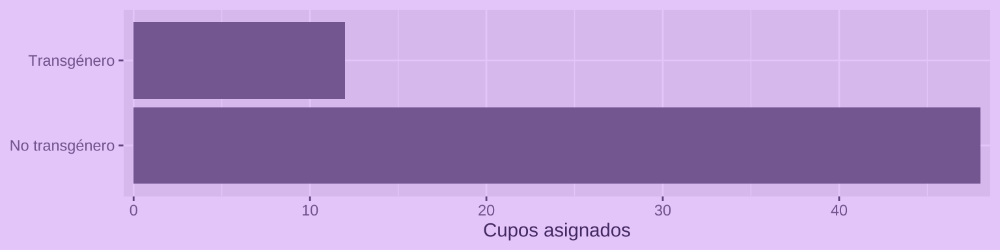
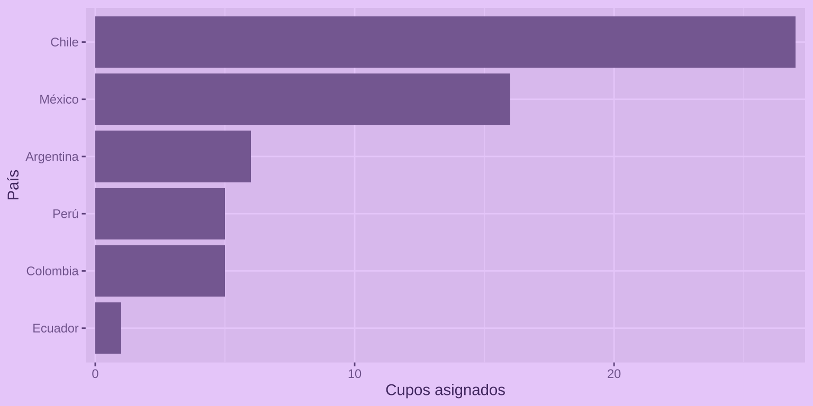

Selección de cupos para curso gratuito de introducción a R
19/1/2026
La convocatoria al curso gratuito de introducción a R fue un éxito! Más de 500 personas postularon para poder aprender.
Lamentablemente no podían participar las 500 personas, así que decidí por hacer una selección aleatoria de participantes, dónde según sus características tendrían mayores o menores probabilidades de obtener un cupo.
Selección
¿Por qué asignar cupos?
Algunas personas dicen que el azar es lo más justo cuando se trata de distribuir recursos limitados. En algunos sentidos es verdad, pero también es cierto que no todas las personas tienen las mismas capacidades ni oportunidades, y también que muchas personas enfrentan barreras culturales, sociales y estructurales para acceder a ciertos recursos y participar de determinados espacios.
Es por esto que opté por asignar cupos considerando cuotas de género, diversidades y disidencias sexogenéricas, y situación de discapacidad.
El objetivo fue poder dar mayores oportunidades a que personas sistemáticamente excluidas pueden participar del curso, sin que esto signifique dejar sin oportunidades a otras personas.
Criterios de probabilidad
Los criterios usados para otorgar las probabilidades de obtener un cupo fueron los siguientes:
| Criterios excluyentes |
|---|
| Inscripción antes de fecha de cierre (14 de enero a las 9 PM) |
| Inscripción con correo válido |
| Carrera o área de estudio en ciencias sociales o humanidades |
Luego de aplicar los criterios excluyentes, quedó un total de 521 postulaciones.
Las probabilidades de selección aumentaron según los siguientes criterios:
| Criterio de inclusión | Probabilidades |
|---|---|
| Género femenino, no binario o queer | 2 |
| Persona transgénero | 3 |
| Persona LGBTIQ+ | 2 |
| Persona con discapacidad | 1 |
| Chilenos/as | 1 |
Asimismo, las probabilidades disminuyeron según los siguientes criterios:
| Criterio de exclusión | Probabilidades |
|---|---|
| Maneja un lenguaje de programación | -1 |
| Posee conocimientos de R | -1 |
En total postularon 12 personas trans, por lo que decidí darles un cupo a todxs.
Selección de cupos
Obviamente utilicé R para hacer la selección 😄
El primer paso fue la limpieza de los datos obtenidos por la
encuesta programada en R con el paquete {surveydown}.
Código de la limpieza de datos
resultados <- data |>
# solamente con correo
filter(!is.na(correo)) |>
# excluir pruebas
filter(nombre != "Bastián Olea") |>
# seleccionar columnas
select(-starts_with("time"), time_end, -session_id, -nivel) |>
# convertir fechas
mutate(time_end = lubridate::as_datetime(time_end)) |>
arrange(time_end) |>
# limpiar nombres
mutate(nombre = str_squish(nombre)) |>
distinct(nombre, .keep_all = TRUE) |>
# filtrar fecha de cierre
filter(time_end <= lubridate::ymd_hms("2026-01-14 20:59:59")) |>
# limpiar respuestas
mutate(across(where(is.character), ~case_match(.x, "sí" ~ "sí", .default = .x)))
De acuerdo a los criterios, cada persona obtuvo un puntaje, a partir del cual las personas postulantes fueron ordenadas en un ranking.
Código de la asignación de puntajes
resultados_p <- resultados |>
mutate(puntaje = 2) |>
# sumar puntos a grupos de interés
mutate(puntaje = if_else(trans == "sí", puntaje + 3, puntaje),
puntaje = if_else(lgbt == "sí" | is.na(lgbt), puntaje + 2, puntaje),
puntaje = if_else(genero %in% c("femenino", "no_binario", "queer_ag_nero_otro"), puntaje + 2, puntaje),
puntaje = if_else(pais == "chile", puntaje + 1, puntaje),
puntaje = if_else(disca != "no", puntaje + 1, puntaje)) |>
# penalizar grupos
mutate(puntaje = if_else(nivel_programacion == "sí", puntaje - 1, puntaje),
puntaje = if_else(nivel_r %in% c("intermedio", "avanzado"), puntaje - 1, puntaje)) |>
# criterios excluyentes
filter(!str_detect(areas, "otra_que_no_es_de_ciencias_sociales_o_humanidades")) |>
# crear ranking de postulantes
arrange(desc(puntaje)) |>
mutate(id = row_number())
Luego, se usó la función sample() para seleccionar 45 cupos aleatorios, pero ponderando las probabilidades de cada persona según su puntaje:
# selección aleatoria con probabilidad
seleccion <- sample(resultados$id,
size = 45,
prob = resultados$id$puntaje,
replace = FALSE)
Resultados
De un total de 521 postulaciones, 60 personas obtuvieron un cupo.
De las 60 personas, 37 son mujeres, y 8 son no binarias.

12 personas trans obtuvieron cupo.
Finalmente, 27 personas son de Chile, 16 de México, y 17 de otros países de latinoamérica.
💜 Gracias a todxs por su interés! En sus correos tendrán la confirmación del cupo, y cerca del día de inicio del curso recibirán el enlace de conexión.